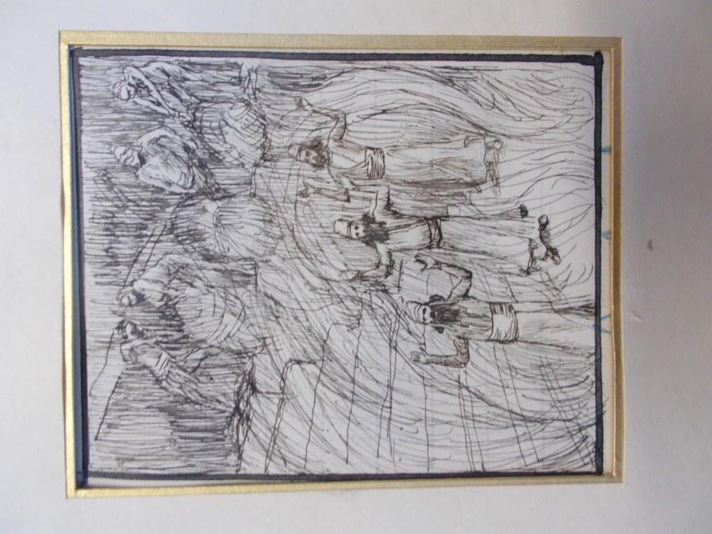

The righteous men in the fiery furnace (J.J. Tissot).
Before diving into new material, take a moment to consolidate what you have learned so far. Lessons 1–8 have introduced you to the following foundational topics:
Warm-Up Drill: Five Quick Questions
Answer each question from memory before checking against your notes. Write your answer in full Syriac script with transliteration.
| # | Question | Expected answer | Syriac |
|---|---|---|---|
| 1 | What is the Peal perfect 3 m.sg. of k-t-b (write)? | ktab — he wrote | ܟܬܒ |
| 2 | What is the Peal imperfect 3 m.sg. of š-m-ʿ (hear)? | nešmaʿ — he will hear | ܢܫܡܥ |
| 3 | How do you say “the king commanded” (p-q-d, 3 m.sg. perfect)? | pqad malkā — the king commanded | ܦܩܕ ܡܠܟܐ |
| 4 | What does the Paael stem add to the root’s meaning? | Intensity, repetition, or factitive/denominative meaning | — |
| 5 | Give the Aphel perfect 3 m.sg. of n-p-q (go out). | ʾappeq — he brought out / caused to go out | ܐܦܩ |
2.1 What Is the Imperative?
The imperative is the grammatical form used to issue direct commands or requests addressed to a second person (“you”). In Syriac, as in Hebrew and Arabic, the imperative exists only in the second person — singular and plural, masculine and feminine. There is no separate first-person or third-person imperative form; indirect commands or wishes (“let us go”, “let him write”) are expressed by the imperfect (often introduced by d-).
The formation of the Peal imperative follows a straightforward rule: take the imperfect stem, strip away the t- prefix of the 2nd person, and you have the imperative. The vowel pattern for action verbs is CCūC (pronounced ū in West Syriac and o in East Syriac, often written ktob or ktūb, “write!”). This parallels the Hebrew Qal imperative (כְּתֹב ktōb) and the Arabic imperative (اُكْتُبْ uktub).
2.2 Peal Imperative — Formation
-y, historically -ī) in
spelling. E.g., ktūb(y) (ktobī) ܟܬܘܒܝ “Write!
(to one woman)”.-w / -ū, or
fuller -ūn). E.g., ktūb(w)
(ktobw) ܟܬܘܒܘ “Write! (to a group of men)”.-ēn (spelled -yn). E.g.,
ktūbēn (ktobēn) ܟܬܘܒܝܢ “Write! (to a group of
women)”.2.3 Complete Paradigm Tables
Root k-t-b ܟܬܒ (write)
| Person/Gender/Number | Estrangela | Transliteration | Literal Meaning |
|---|---|---|---|
| 2 m.sg. | ܟܬܘܒ | ktūb (ktob) | Write! (to one man) |
| 2 f.sg. | ܟܬܘܒܝ | ktūb(y) (ktobī) | Write! (to one woman) |
| 2 m.pl. | ܟܬܘܒܘ | ktūb(w) (ktobw) | Write! (to a group of men) |
| 2 f.pl. | ܟܬܘܒܝܢ | ktūbēn (ktobēn) | Write! (to a group of women) |
Root š-m-ʿ ܫܡܥ (hear — a-vowel class)
| Person/Gender/Number | Estrangela | Transliteration | Literal Meaning |
|---|---|---|---|
| 2 m.sg. | ܫܡܥ | šmaʿ | Hear! (to one man) |
| 2 f.sg. | ܫܡܥܝ | šmaʿ(y) (šmaʿī) | Hear! (to one woman) |
| 2 m.pl. | ܫܡܥܘ | šmaʿ(w) (šmaʿw) | Hear! (to a group of men) |
| 2 f.pl. | ܫܡܥܝܢ | šmaʿēn | Hear! (to a group of women) |
2.4 Derived Stems: Paael and Aphel Imperatives
2.5 Negative Commands
Key Rule: Negating Commands
In Syriac, negative commands (prohibitions) are NOT formed with the imperative. Instead, use: lā + IMPERFECT (2nd person). This is parallel to Biblical Hebrew (אַל + jussive / לֹא + imperfect) and Arabic (لَا + jussive). Example: lā tektūb (ܠܐ ܬܟܬܘܒ) = “Do not write!” (lit. “you shall not write”) Example: lā tešmaʿ (ܠܐ ܬܫܡܥ) = “Do not listen!”
2.6 Cross-Linguistic Comparison
| Language | Form (write!) | Form (hear!) | Negative | Notes |
|---|---|---|---|---|
| Syriac | ktūb (ktob) ܟܬܘܒ | šmaʿ ܫܡܥ | lā + imperfect | 2nd person only; 4 forms |
| Hebrew | כְּתֹב ktōb | שְׁמַע šmaʿ | אַל + jussive | Similar 4-form paradigm |
| Arabic | اُكْتُبْ uktub | اِسْمَعْ ismaʿ | لَا + jussive | Form I imperative derived from imperfect |
| Greek | γράφε / γράψον | ἄκουε / ἄκουσον | μή + impv./subj. | Pres./Aor. distinction; no gender |
| Latin | scribe | audi | noli + infinitive | Singular/plural; no gender marking |
2.7 Example Commands with Interlinear Gloss
| Estrangela | Transliteration | Word Gloss | English |
|---|---|---|---|
| ܟܬܘܒ ܫܡܗ ܕܡܠܟܐ | ktūb šmeh d-malkā | write! name-his of-the-king | Write the name of the king! |
| ܫܡܥ ܩܠܝ | šmaʿ qāl-y | hear! voice-my | Hear my voice! |
| ܗܘܘ ܝܕܥܝܢ | hwaw yādʿīn | be-pl.! knowing (m.pl.) | Know (be knowing)! [m.pl.] |
| ܠܐ ܬܕܚܠ | lā tedḥal | not you-fear | Do not be afraid! |
| ܐܙܠܘ ܘܐܡܪܘ | ʾezalw w-ʾemarw | go-pl.! and-say-pl.! | Go and tell! [m.pl.] |
| ܐܚܘܐ ܠܝ ܐܬܐ | ʾaḥwā lī ʾātā | show! to-me sign | Show me a sign! |
3.1 The Nature of the Syriac Infinitive
Syriac, like Arabic and Hebrew, possesses a verbal noun — a form derived from the verb root that expresses the action in abstract form. In Arabic this is called the maṣdar (مَصْدَر, “source”); in Hebrew it corresponds to the infinitive construct. In Syriac it is called the infinitive and is Always preceded by the prefix m-. In narrative, it appears most commonly as a complementary infinitive after a verb of beginning, ability, desire, or command, introduced by the prefixed preposition l- (“to”).
3.2 Infinitive Formation by Stem
3.3 Infinitive Forms — Five Key Verbs
| Root | Meaning | Peal Inf. | Paael Inf. | Aphel Inf. |
|---|---|---|---|---|
| k-t-b | write | mektab ܡܟܬܒ | mkattābū ܡܟܬܒܘ | maktābū ܡܟܬܒܘ |
| š-m-ʿ | hear | mešmaʿ ܡܫܡܥ | mšammāʿū ܡܫܡܥܘ | mašmāʿū ܡܫܡܥܘ |
| q-ṭ-l | kill | meqṭal ܡܩܛܠ | mqaṭṭālū ܡܩܛܠܘ | maqṭālū ܡܩܛܠܘ |
| p-q-d | command | mepqad ܡܦܩܕ | mpaqqādū ܡܦܩܕܘ | mapqādū ܡܦܩܕܘ |
| y-d-ʿ | know | meddaʿ ܡܕܥ | myaddāʿū ܡܝܕܥܘ | mawdāʿū ܡܘܕܥܘ |
3.4 The Critical Construction: l- + Infinitive
The l- + Infinitive Construction
PATTERN: MAIN VERB + l- + INFINITIVE This construction expresses purpose or complement: “he began to write”, “she is able to hear”. The preposition l- is prefixed directly to the infinitive with no space. Compare: Hebrew lamed + infinitive construct לִכְתֹּב (liḵtōb).
Eight Example Sentences with l- + Infinitive:
| Estrangela | Transliteration | Word Gloss | English |
|---|---|---|---|
| ܫܪܝ ܠܡܟܬܒ | šarrī l-mektab | began to-write | He began to write. |
| ܡܨܐ ܠܡܫܡܥ | mṣē l-mešmaʿ | is-able to-hear | He is able to hear. |
| ܒܥܐ ܠܡܐܙܠ | bāʿē l-mēzal | wants to-go | He wants to go. |
| ܨܒܐ ܠܡܩܛܠ | ṣābē l-meqṭal | wishes to-kill | He wishes to kill. |
| ܦܩܕ ܠܡܐܣܪ | pqad l-mēsar | commanded to-bind | He commanded (them) to bind. |
| ܫܕܪ ܠܡܥܒܕ | šaddar l-meʿbad | sent to-do/make | He sent (them) to act. |
| ܠܐ ܡܨܐ ܠܡܐܙܠ | lā mṣē l-mēzal | not is-able to-go | He is not able to go. |
| ܫܪܝܬ ܠܡܩܪܐ ܡܠܬܐ | šarrīt l-meqrā meltā | you-began to-read the-word | You began to read the word. |
4.1 Semi-Modal Verbs
These verbs function like modal auxiliaries in English and govern an infinitive complement introduced by l-. They are extremely common in Syriac narrative.
This vocabulary set is essential for the narrative of Lesson 9. Learn both the verbal root and its noun/adjective derivatives.
| Root / Lemma | Estrangela | Transliteration | English |
|---|---|---|---|
| m-ḥ-y | ܡܚܐ | mḥā / nemḥē | strike, smite, hit |
| d-ḥ-l | ܕܚܠ | dḥel / nedḥal | fear, be afraid |
| ḥ-d-y | ܚܕܝ | ḥdī / neḥdē | rejoice, be glad |
| ʾ-s-r | ܐܣܪ | ʾesar / nēsar | bind, tie, imprison |
| š-r-y | ܫܪܐ | šrā / nešrē | loosen, release; Paael šarrī begin |
| r-m-y | ܪܡܐ | rmā / nermē | throw, cast |
| ʾ-ḥ-d | ܐܚܕ | ʾeḥad / nēḥod | seize, grab, take hold |
| g-r-r | ܓܪ | gar / neggor | drag, pull |
| ʿ-r-q | ܥܪܩ | ʿraq / neʿroq | flee, escape |
| r-d-p | ܪܕܦ | rdap / nerdop | pursue, chase, persecute |
| q-ṭ-l | ܩܛܠ | qṭal / neqṭūl (neqṭol) | kill, slay |
| p-ṣ-ʿ | ܦܨܥ | pṣaʿ / nepṣaʿ | wound, bruise |
| z-ʿ-q | ܙܥܩ | zʿaq / nezʿoq | cry out, shout |
| p-q-d | ܦܩܕ | pqad / nepqūd (nepqod) | command, order |
| k-n-š | ܟܢܫ | knaš / neknoš | gather, assemble |
| ʾesṭraṭyōṭā | ܐܣܛܪܛܝܘܛܐ | ʾesṭraṭyōṭā | soldier (Greek loanword: στρατιώτης) |
| ḥaylā | ܚܝܠܐ | ḥaylā | army; strength, power (dual meaning) |
| saypā | ܣܝܦܐ | saypā | sword |
| nūrā | ܢܘܪܐ | nūrā | fire (f.) |
| ʾattūnā | ܐܬܘܢܐ | ʾattūnā | furnace, oven |
| šīšaltā | ܫܫܠܬܐ | šīšaltā | chain (also spelled ܫܠܫܠܬܐ šalšaltā) |
| gūbbā | ܓܘܒܐ | gūbbā | pit, cistern; den (as in lions’ den) |
| bēt ʾasīrē | ܒܝܬ ܐܣܝܪܐ | bēt ʾasīrē | prison (lit. “house of the bound ones”) |
| kenšā | ܟܢܫܐ | kenšā | crowd, gathering, assembly |
| qālā | ܩܠܐ | qālā | voice, sound |
| rūgzā | ܪܘܓܙܐ | rūgzā | anger, wrath |
| deḥltā | ܕܚܠܬܐ | deḥltā | fear, reverence (noun from d-ḥ-l) |
| ʾammīnūtā | ܐܡܝܢܘܬܐ | ʾammīnūtā | steadfastness, constancy, endurance |
| pūqdānā | ܦܘܩܕܢܐ | pūqdānā | command, commandment (noun from p-q-d) |
| ṣebyānā | ܨܒܝܢܐ | ṣebyānā | will, wish, desire (key theological term) |
The King Commands: Seize Yukhannan
The narrative reaches a climax. Having heard reports of Yukhannan’s preaching and miracles, the king summons his soldiers and issues a series of direct commands. The passage is rich in imperatives and l- + infinitive constructions, giving you immediate practice in the new grammar.
Sentence 1
ܡܠܟܐ ܕܝܢ ܟܕ ܫܡܥ ܡܠܐ ܗܠܝܢ
malkā dēn kad šmaʿ mellē hālēn
malkā (the-king) dēn (now/but) kad (when) šmaʿ (he-heard) mellē (words) hālēn (these)
→ Now when the king heard these words,
Sentence 2
ܐܬܡܠܝ ܒܪܘܓܙܐ ܘܙܥܩ ܒܩܠܐ ܪܒܐ
ʾetmlī b-rūgzā w-zʿaq b-qālā rabbā
ʾetmlī (he-was-filled) b-rūgzā (with-anger) w-zʿaq (and-cried-out) b-qālā (with-voice) rabbā (great)
→ he was filled with anger and cried out with a great voice.
Sentence 3
ܦܩܕ ܠܐܣܛܪܛܝܘܛܘܗܝ
pqad l-ʾesṭraṭyōṭāw-hy
pqad (he-commanded) l-ʾesṭraṭyōṭāw-hy (his-soldiers)
→ He commanded his soldiers:
Sentence 4
ܐܙܠܘ ܘܐܚܘܕܘ ܠܝܘܚܢܢ
ʾezalw w-ʾeḥodw l-Yūḥannan
ʾezalw (go! [m.pl.]) w-ʾeḥodw (and-seize! [m.pl.]) l-Yūḥannan (Yukhannan)
→ “Go and seize Yukhannan!”
Sentence 5
ܘܐܝܬܘ ܘܐܪܡܘܗܝ ܒܐܬܘܢܐ
w-ʾaytāw w-ʾarmāw-hy b-ʾattūnā
w-ʾaytāw (and-bring! [m.pl.]) w-ʾarmāw-hy (and-throw-him!) b-ʾattūnā (into-the-furnace)
→ “And bring and throw him into the furnace!”
Sentence 6
ܠܐ ܬܕܚܠܘܢ ܡܢ ܐܬܘܬܗ
lā tedḥlūn men ʾātwāteh
lā (do-not) tedḥlūn (you-fear [m.pl.]) men (from) ʾātwāteh (his-signs)
→ “Do not fear his signs!”
Sentence 7
ܐܣܛܪܛܝܘܛܐ ܫܪܝܘ ܠܡܐܙܠ
ʾesṭraṭyōṭē šarrīw l-mēzal
ʾesṭraṭyōṭē (the-soldiers) šarrīw (began) l-mēzal (to-go)
→ The soldiers began to go.
Sentence 8
ܒܥܐ ܚܕ ܡܢܗܘܢ ܠܡܗܦܟ
bʿā ḥad menhūn l-mehpak
bʿā (wanted) ḥad (one) menhūn (of-them) l-mehpak (to-turn-back)
→ One of them wanted to turn back.
Sentence 9
ܐܡܪ ܠܐ ܡܨܝܢܢ ܠܡܩܛܠ ܙܕܝܩܐ
ʾemar: lā mṣēnan l-meqṭal zaddīqā
ʾemar (he-said) lā (not) mṣēnan (we-are-able) l-meqṭal (to-kill) zaddīqā (a-righteous-man)
→ He said: “We are not able to kill a righteous man.”
Sentence 10
ܐܚܪܢܐ ܐܣܪܘ ܐܝܕܘܗܝ ܒܫܫܠܬܐ
ʾaḥrānē ʾesarw ʾīdāw-hy b-šīšaltā
ʾaḥrānē (others) ʾesarw (bound) ʾīdāw-hy (his-hands) b-šīšaltā (with-a-chain)
→ Others bound his hands with a chain.
Sentence 11
ܘܓܪܘܗܝ ܠܘܬ ܐܬܘܢܐ
w-garrū-hy lwāt ʾattūnā
w-garrū-hy (and-they-dragged-him) lwāt (toward) ʾattūnā (the-furnace)
→ And they dragged him toward the furnace.
Sentence 12
ܝܘܚܢܢ ܕܝܢ ܠܐ ܕܚܠ ܐܠܐ ܨܠܝ
Yūḥannan dēn lā dḥel ʾellā ṣallī
Yūḥannan (Yukhannan) dēn (but) lā (not) dḥel (feared) ʾellā (rather) ṣallī (prayed)
→ But Yukhannan did not fear; instead he prayed.
Exercise 1: Imperative Paradigm
Write out all four imperative forms (m.sg., f.sg., m.pl., f.pl.) for each of the following roots in the Peal stem. Include Estrangela script and transliteration.
Exercise 2: Infinitive Formation
Form the Peal, Paael, and Aphel infinitives for each root. Use the pattern: Peal = meCCaC; Paael = mCaCCāCū; Aphel = maCCāCū.
Exercise 3: Translation — Syriac to English
Translate each sentence into English. Identify any imperatives and l- + infinitive constructions.
Exercise 4: Production — English to Syriac
Express each sentence in Syriac. Use Estrangela script and transliteration.
Exercise 5: Reading Comprehension
Re-read the story in Section 6 and answer the following questions in English.
Exercise 1: Imperative Paradigm
Exercise 2: Infinitive Formation
Exercise 3: Translation
Exercise 4: Production
Exercise 5: Comprehension
The Imperative at a Glance
| Form | Ending | Example (k-t-b) | Estrangela |
|---|---|---|---|
| Masculine Singular | CCūC (CCoC, bare stem) | ktūb (ktob) | ܟܬܘܒ |
| Feminine Singular | CCūC + -y (-ī) | ktūb(y) (ktobī) | ܟܬܘܒܝ |
| Masculine Plural | CCūC + -w (-ū) | ktūb(w) (ktobw) | ܟܬܘܒܘ |
| Feminine Plural | CCūC + -ēn | ktūbēn (ktobēn) | ܟܬܘܒܝܢ |
Infinitive Patterns
| Stem | Pattern | Example | Notes |
|---|---|---|---|
| Peal | meCCaC | mektab ܡܟܬܒ | Most common; parallel to Hebrew inf. construct with l- |
| Paael | mCaCCāCū | mbarrākū ܡܒܪܟܘ | Doubled middle radical + -ū ending |
| Aphel | maCCāCū | mappāqū ܡܦܩܘ | ma- prefix with -ū ending |
The l- + Infinitive Construction
Quick Reference
MAIN VERB + l- + INFINITIVE = “to [do X]” šarrī l-mektab = He began to write mṣē l-mešmaʿ = He is able to hear bāʿē l-mēzal = He wants to go pqad l-mēsar = He commanded to bind NEGATIVE: lā + IMPERFECT (not imperative!) for prohibitions